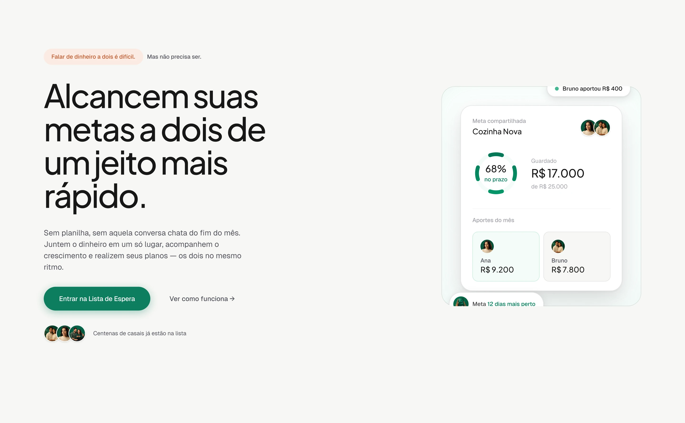
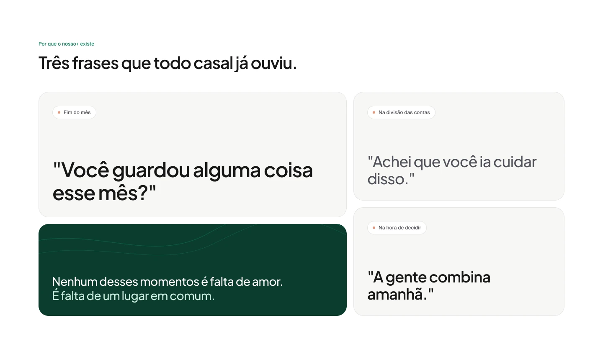
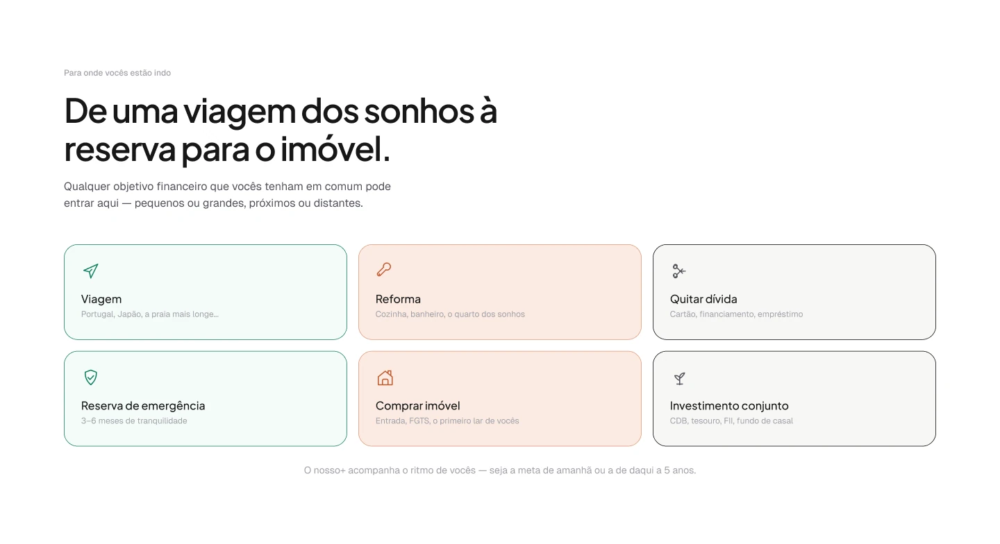
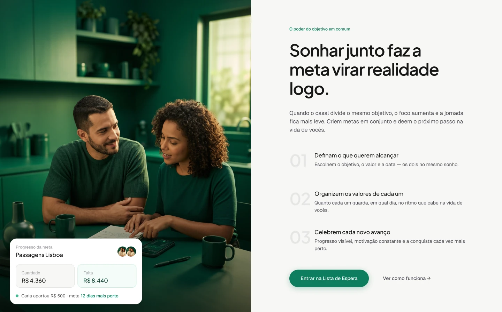
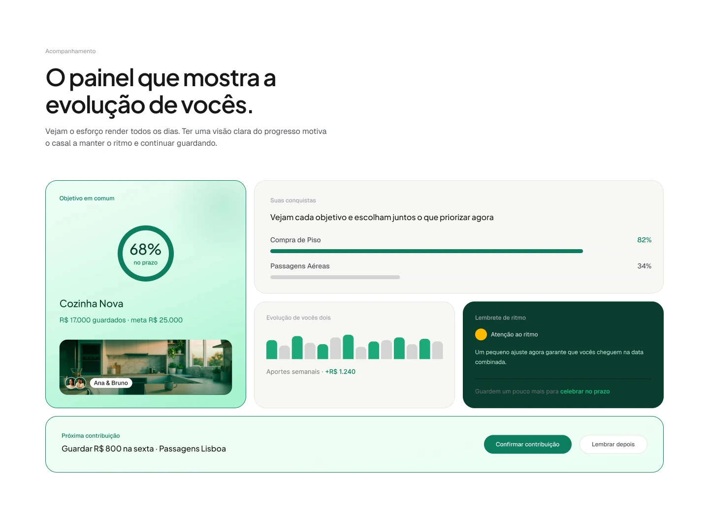
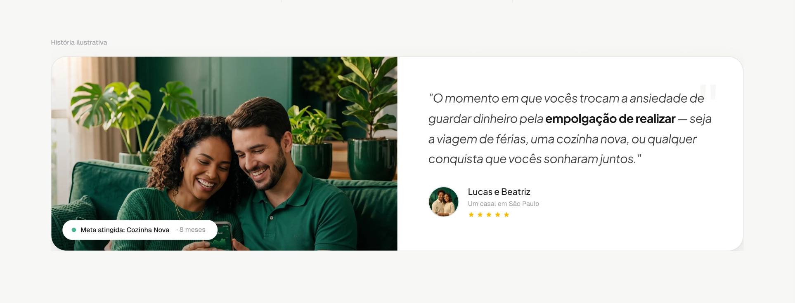
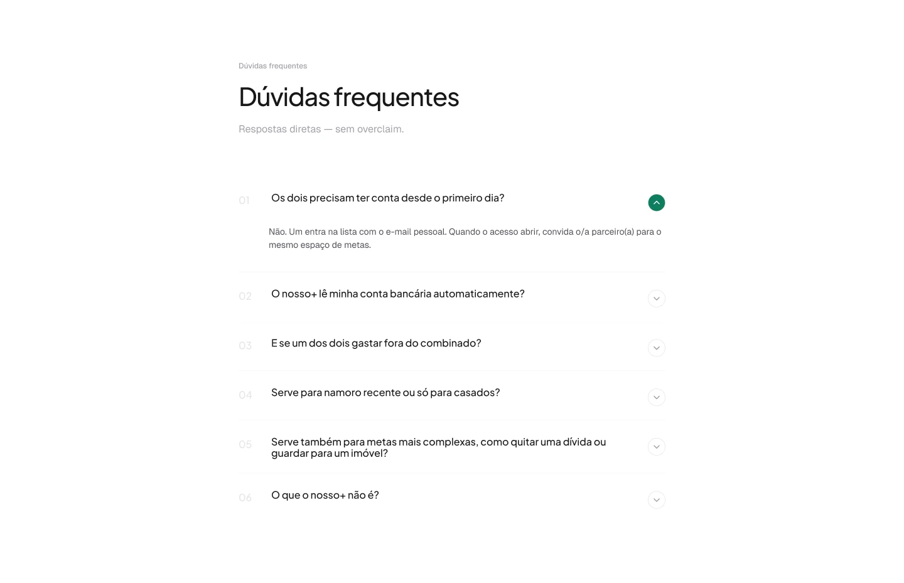
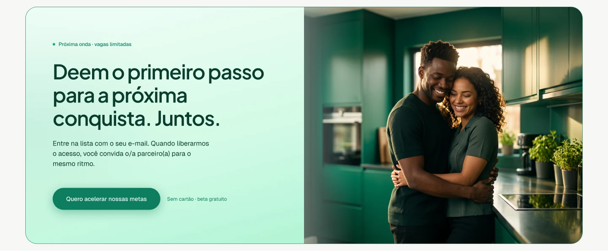

Produto próprio · Landing page e app
nosso+
Gestão financeira para casais alcançarem objetivos em conjunto, do simples ao complexo, sempre a dois.
- Papel
- Product design ponta a ponta e implementação
- Ferramentas
- Figma, Figma Make, Claude Code, Next.js, Tailwind
- Entrega
- Landing page com lista de espera, dashboard e design system
- Status
- Em desenvolvimento

Contexto
O nosso+ nasceu da evolução de um projeto de curso sobre a conexão Figma + Cursor, que começou como uma dashboard financeira genérica: saldo, receitas, despesas, extrato. Um produto correto, mas sem ponto de vista.
Ao revisar o resultado, o ponto de vista apareceu: e se esse dinheiro não fosse de uma pessoa só, mas de um casal construindo algo junto? A partir daí, reformulei o produto em torno de metas compartilhadas (reserva de emergência, cozinha nova, viagem, carro novo) em vez de tratar o casal como um detalhe de "membros da família" dentro de uma dashboard pessoal.
Por que ele existe
A landing parte de três frases que todo casal já ouviu: "Você guardou alguma coisa esse mês?", "Achei que você ia cuidar disso." e "A gente combina amanhã."
A conclusão vem logo abaixo, e é a tese do produto: nenhum desses momentos é falta de amor, é falta de um lugar em comum. É esse lugar que o nosso+ oferece.

Direção de design
A primeira mudança foi de tom: menos "sistema de gestão", mais "vocês dois, no mesmo objetivo". Isso significou reescrever toda a copy para soar mais próxima e menos corporativa, remover os elementos de UI escura que passavam uma atmosfera fria e, o mais importante, inverter a hierarquia visual do dashboard. Os cards de total, receita e despesa deixaram de ser o centro da tela; as caixinhas de metas assumiram esse lugar.
A segunda camada de refinamento veio de duas referências que sigo de perto em design: Stripe e Airbnb. Usei os dois como parâmetro para revisar colunas, containers e espaçamento do dashboard inteiro: largura de leitura consistente entre telas, respiro vertical generoso, nada esticado de ponta a ponta em telas largas. A mesma contenção elegante que gosto nesses produtos, aplicada aqui num contexto bem mais informal.


Ritmo de aportes
O componente que mais gosto de ter desenhado neste projeto é o card de ritmo de cada meta. Ele cruza o progresso atual com o prazo definido e calcula, de verdade, se o casal está adiantado, no ritmo certo ou precisa de atenção. Nada de status decorativo. O card mostra um painel de progresso, um painel de status com a leitura em linguagem simples, um gráfico do histórico de aportes mês a mês e uma sugestão concreta de quanto cada pessoa precisaria contribuir para chegar no prazo.
Para metas de viagem, existe uma camada a mais: um alerta de bom momento para comprar a passagem, cruzando o saldo já guardado com uma simulação de variação de preço. É a feature que diferencia o produto de uma dashboard financeira genérica: ele não só mostra o dinheiro, sugere a próxima ação certa.

Uma história, não um depoimento
A seção final mostra uma história ilustrativa: um casal que atinge a meta da cozinha nova em oito meses. As fotos foram criadas com direção de arte assistida por IA e a história é rotulada como ilustrativa, para ninguém confundir com um depoimento real.
A frase do casal resume a tese do produto: o momento em que a ansiedade de guardar dinheiro vira empolgação de realizar.

Sem overclaim
As dúvidas frequentes foram escritas com respostas diretas, inclusive sobre o que o nosso+ não é. Os dois precisam ter conta desde o primeiro dia? Não. O produto lê a conta bancária automaticamente? A resposta aparece sem rodeio. Serve para namoro recente? Serve para metas complexas, como quitar dívida? Cada pergunta é uma objeção real, respondida no tom do resto da página.


Sistema de componentes
Discutindo Atomic Design com o mesmo rigor crítico que aplico a qualquer decisão de produto, optei por não seguir a taxonomia literal de átomos, moléculas e organismos. Na prática, ela cria mais fricção do que clareza num time pequeno. Em vez disso, organizei os componentes por domínio (dashboard, modais, layout) e apliquei uma regra simples para decidir o que vira componente compartilhado: tudo que se repete em três ou mais lugares vai para uma camada única de primitivos.
Foi assim que Avatar, Badge e EmptyState nasceram, extraídos de seis, dois e sete pontos de duplicação reais no código, respectivamente. E como o objetivo é que design e código nunca percam sincronia, montei os três também no Figma, com as mesmas variantes e os mesmos tokens de cor usados no código, as mesmas variáveis que já alimentavam o componente de botão do design system.
Próximos passos
O que vem depois desta primeira versão.
-
Backend real e persistência
Hoje todo o estado vive em memória, no front-end. O próximo passo é sair do mock e ter uma base de dados de verdade, com as metas e aportes de cada casal persistidos entre sessões.
-
Autenticação e convite do parceiro(a)
Um fluxo de login e de convite que vincula duas contas ao mesmo espaço de metas. Hoje os dois membros do casal são só dados mockados, sem conta real por trás.
-
Preço de passagem de verdade
O alerta de bom momento para comprar hoje roda sobre uma simulação. O próximo passo é integrar com uma API real de preços de voos e transformar o alerta em notificação (push ou e-mail), não só um aviso na tela.
-
Metas e categorias customizáveis
As categorias de meta hoje são fixas (viagem, casa, veículo, emergência, outro). Dar ao casal a liberdade de criar categorias e ícones próprios é um passo natural para um produto pensado para qualquer tipo de objetivo.
-
PWA instalável
O produto já é responsivo, mas o uso real, com o casal acompanhando metas no dia a dia, pede algo instalável no celular, com ícone na tela inicial e, futuramente, notificações locais.
-
Storybook conectado ao Figma
Com Avatar, Badge, EmptyState e Button já espelhados no Figma, o passo natural é documentá-los num Storybook com Code Connect, garantindo que design e código continuem nascendo e evoluindo juntos.
Contato
Gostou do que viu? Vamos conversar.